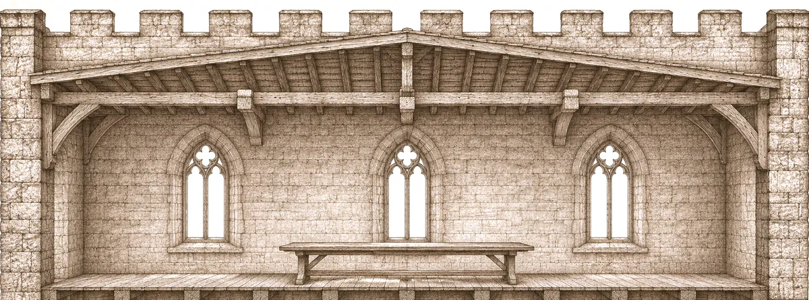

Prisons and dungeons, 1200–1800
Myth or Record?
24 FLOORS · 24 REAL PLACES
EVERY ANSWER SOURCED

Most of what people “know” about dungeons was written long after the doors were locked. Climb down this tower, one floor at a time. Each floor is a real prison, in date order. At each one, decide whether the story is myth or record, then see the evidence.
About this tower: it is a composite. No such building exists; each floor stands for a different real place. The floor pictures are modern illustrations, not likenesses. The claims, verdicts and sources are the part to trust, and where a story is disputed or simplified, the floor says so.
The bottom of the tower
How this was made
- Each floor was researched from at least two sources, at least one of them not Wikipedia: heritage bodies, museums, published histories and, where they survive, the prisoners’ own accounts. Every link was opened and checked against what it is cited for.
- Each claim is phrased so its answer can be defended. Where the honest answer is “partly”, the floor gives the verdict that fits the wording and explains the rest under What’s simplified.
- Floors 1–23 run in date order. Floor 24, the oubliette, is a story about many places, and comes last because it is where the popular idea of the dungeon bottoms out.
- Illustrations were drawn with an image model from the researchers’ descriptions, in the style of an old engraving. They are not likenesses of the real rooms.